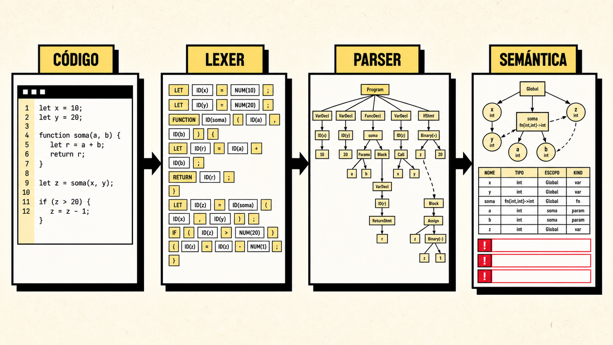
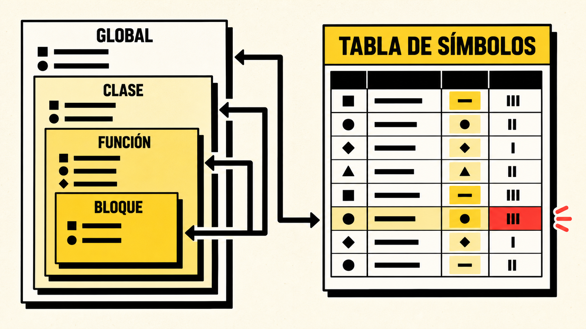

Errores más allá de la gramática
Asignar un string a un integer, llamar una función con argumentos incorrectos o usar return fuera de una función.

Análisis léxico, sintáctico y semántico con ANTLR 4, TypeScript, tabla de símbolos y ámbitos léxicos.
Un parser puede aceptar una estructura que todavía use nombres inexistentes, tipos incompatibles o instrucciones fuera de contexto.
Asignar un string a un integer, llamar una función con argumentos incorrectos o usar return fuera de una función.
Recorrer el CST válido, inferir tipos, resolver símbolos y producir diagnósticos precisos.
Editor, fases visibles, diagnósticos, tabla de símbolos, ámbitos y árboles navegables.
Incluye variables, constantes, funciones, closures, clases, herencia, arreglos y control de flujo.
class Contador { let valor: integer; function constructor(inicio: integer) { this.valor = inicio; } function siguiente(): integer { this.valor = this.valor + 1; return this.valor; } }
El análisis semántico únicamente se ejecuta si las fases anteriores entregan un CST válido.
ANTLR continúa después de ciertos errores para informar más de un problema por archivo.
Si lexer o parser fallan, la semántica queda marcada como omitida.
UI, CLI y pruebas consumen el mismo objeto AnalyzeResult.
ANTLR genera lexer, parser, listener y visitor TypeScript desde una gramática combinada.
expression
: assignmentExpression
;
logicalOrExpression
: logicalAndExpression
(OR logicalAndExpression)*
;
ifStatement
: IF LPAREN expression RPAREN block
(ELSE block)?
;
Identidades de clase, firmas, campos, métodos e herencia.
Recorre statements y expresiones, resuelve tipos y produce diagnósticos.
Símbolos, ámbitos, árboles, métricas y errores para UI, CLI y tests.
La asignabilidad, comparabilidad y combinación numérica se centralizan para evitar reglas contradictorias.
| Regla | Aceptado | Rechazado | Diagnóstico |
|---|---|---|---|
| Aritmética | integer + float | boolean - integer | SEM004 |
| Lógica | boolean && boolean | integer || boolean | SEM004 |
| Asignación | float = integer | integer = string | SEM003 |
| Arreglos | [1, 2, 3] | [1, "dos"] | SEM017 |
| Índices | lista[0] | lista["cero"] | SEM015 |
Cada declaración conserva tipo, mutabilidad, inicialización, ubicación, referencias y captura por closures.
Inserta localmente y detecta colisiones en el ámbito exacto.
Busca desde el ámbito actual hacia la raíz léxica.
Actualiza tipo, estado, firmas y metadatos sin cambiar identidad.
Construye el árbol de bloques, funciones, clases y ciclos.

Valida cantidad y tipo de cada argumento, además del valor retornado.
Marca variables usadas desde una función anidada como captured.
Clases homónimas pueden existir en ámbitos hermanos sin confundirse.
Campos y métodos se buscan en la clase y luego en sus ancestros.
function crearContador(): integer { let total: integer = 0; function incrementar() { total = total + 1; return total; } return incrementar(); }
Los códigos permiten probar reglas sin depender del texto exacto del mensaje.
SEM001L8:C13Identificador no declaradoSEM003L4:C1Asignación o inicialización incompatibleSEM008L16:C5Retorno incompatible con la firmaSEM012L23:C17Miembro inexistente en una claseSEM018L31:C3Código inalcanzable después de una terminaciónSEM023L6:C7Variable utilizada antes de inicializarseLa interfaz reorganiza la información en una guía lateral, un editor dominante y un explorador de resultados por capas.
| Categoría | Casos válidos | Casos fallidos | Evidencia |
|---|---|---|---|
| Tipos | promoción, lógica, listas | operadores, asignación, índices | semanticAnalyzer.test.ts |
| Ámbitos | shadowing y padres | redeclaración y escape | scopeManager.test.ts |
| Funciones y clases | recursión, closures, herencia | argumentos, retorno, miembros | semanticAnalyzer.test.ts |
| Lexer | tokenización | errores léxicos recuperables | lexer.test.ts |
| Parser | programas integrales | errores sintácticos recuperables | parser.test.ts |
Las clases ya no se almacenan globalmente por nombre. Ahora poseen identidad y resolución léxica.
Los campos se infieren antes de métodos y las funciones sin anotación obtienen un retorno observado.
Los usos de clases, campos y métodos se reflejan en la tabla de símbolos.
Las estructuras de control vuelven a coincidir con la gramática base entregada.
let total: integer = "texto"; function sumar(a: integer): integer { return a; } sumar(1, 2); print(noExiste);
La aplicación reside en compiscript-ide-work y comparte el mismo motor entre web, escritorio y CLI.
cd compiscript-ide-work npm install npm run generate npm test npm run build npm run dev # CLI semántica npm run cli -- examples/semantic/valid_complete.cps
Compiscript Semantic IDE conecta teoría, implementación y evidencia: reconoce el lenguaje, valida su significado y expone cada resultado de forma inspeccionable.
Reglas centralizadas, ámbitos léxicos reales y diagnósticos estables.
Del código fuente al símbolo, tipo, ámbito y nodo semántico.
IDE interactivo, CLI, pruebas automatizadas, documentación e informe.